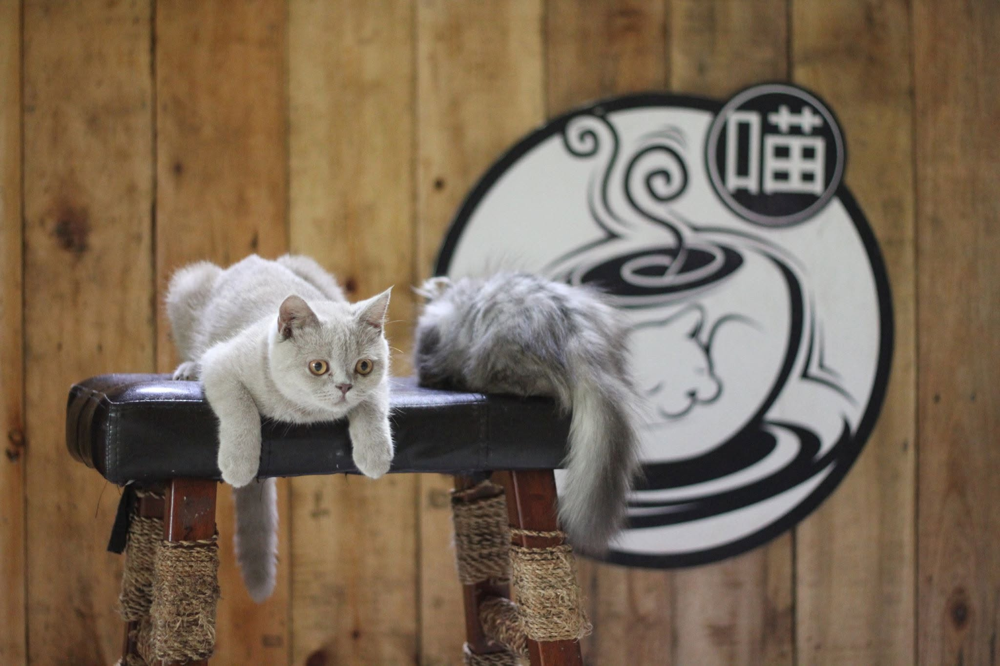

QUEZON CITY · PIONEER PICK
Miao Cat Cafe
Miao Cat Cafe is an archive pick remembered for its homey cat room, generous two-hour visits, and dessert menu. I would have visited for the relaxed cat time and stayed for favorites such as chocolate chip muffins, lava cake, and banana pecan muffins. It remains an important part of the city's early cat-café story, but visitors should confirm its current status rather than treating this historical listing as guaranteed to be open.
| Historical address | 2/F Cake2Go, #7 Congressional Avenue, Quezon City |
|---|---|
| Operating status | Archive listing—verify before making plans. |
| Historical rating | 4.1 / 5 from 117 collected reviews |
| Remembered for | Desserts, long cat visits, and a homey room |